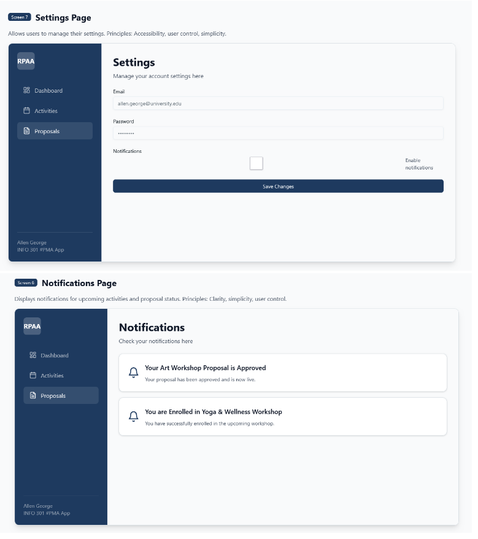
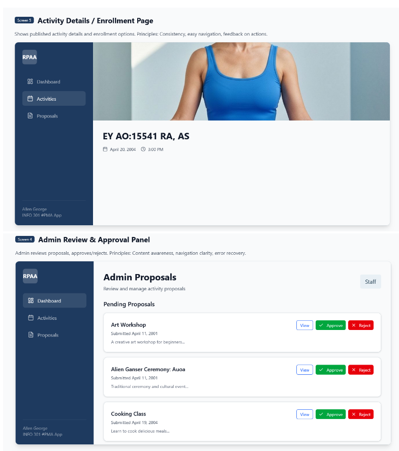
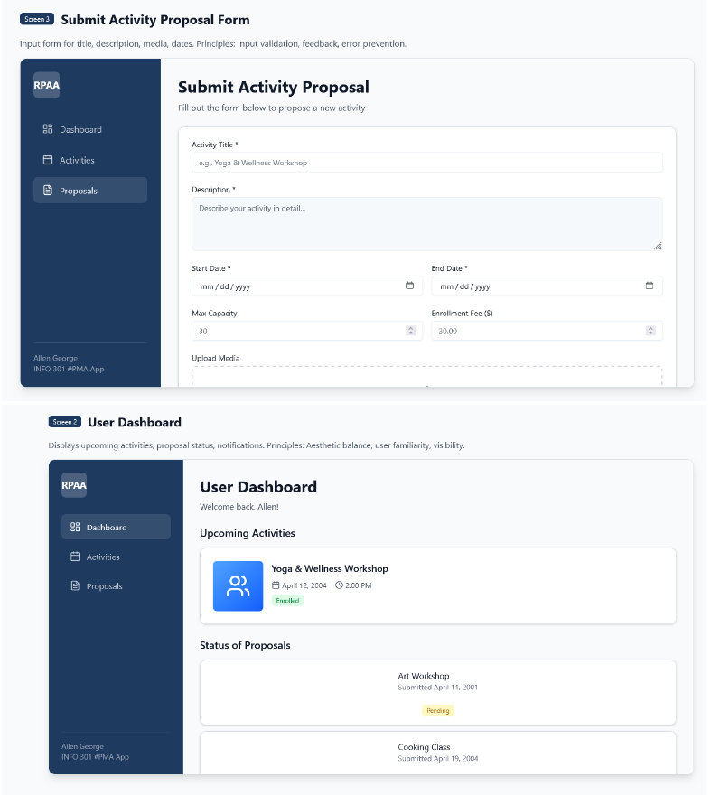
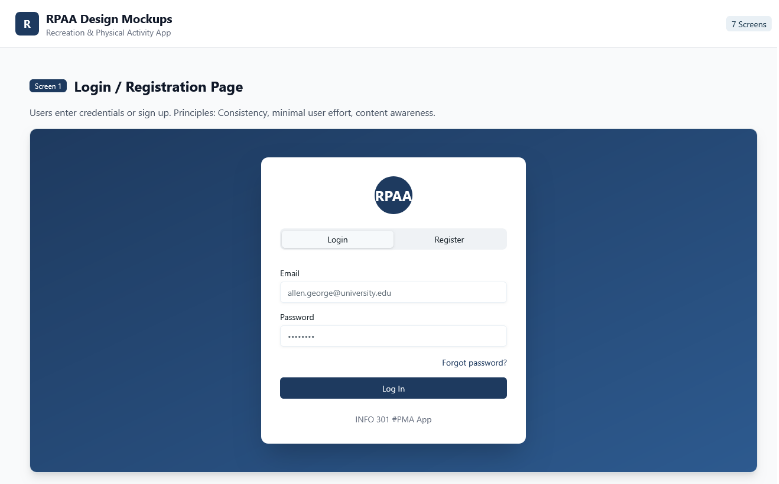

INFO 361 | Systems Analysis & Design
Lesson Management & Scheduling System
Systems analysis project designed to replace a private instructor's manual lesson scheduling, reminders, and payment tracking with a centralized digital workflow.
- Business Case
- Requirements
- Proposal
- UI Mockups
What Was Done
- Defined the system request, feasibility analysis, and business value for a lesson management platform.
- Specified requirements for scheduling, reminders, student records, payment tracking, inquiries, and reporting.
- Documented use cases and implementation recommendations for a system that could be built later.
- Tested prototype concepts and revised the interface based on usability feedback.
What This Showcases
- Ability to turn a real business workflow into a structured system proposal.
- Comfort with analysis, documentation, and process design before implementation.
- Attention to usability, accessibility, and operational practicality.
System Proposal
UI Mockups



